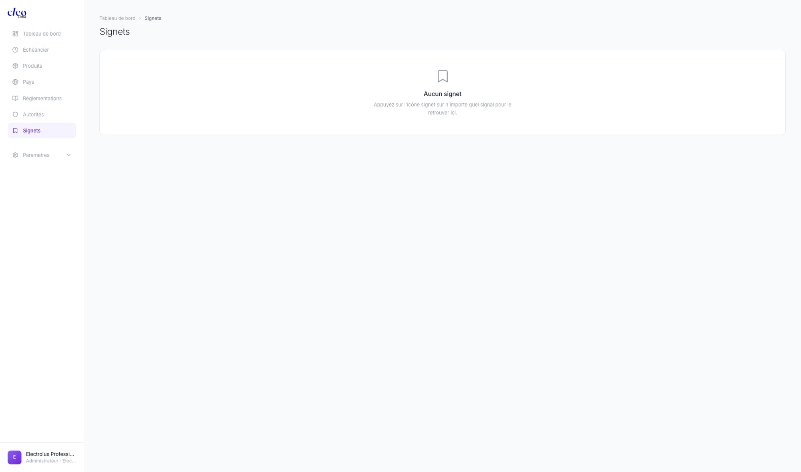
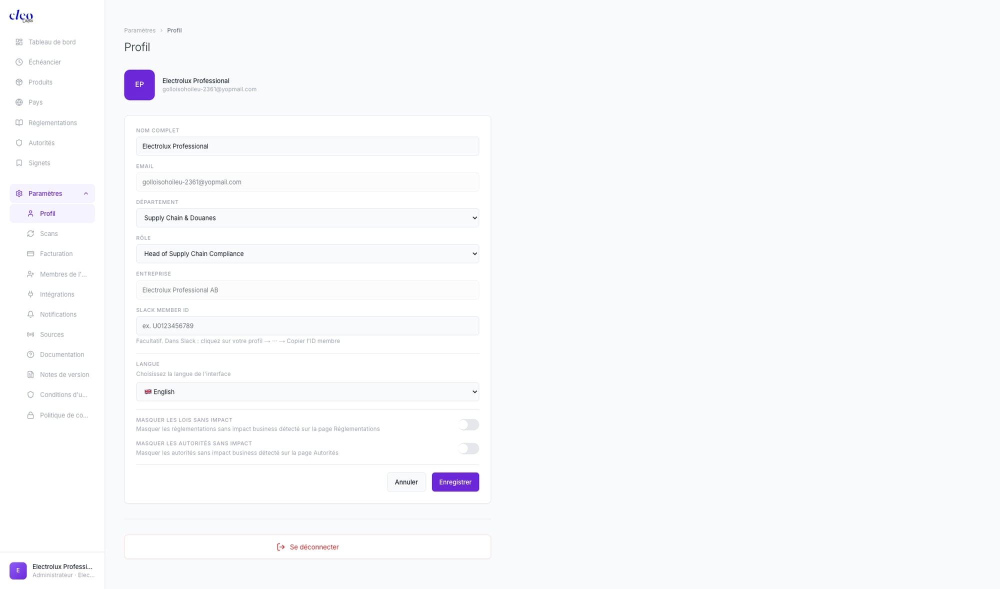
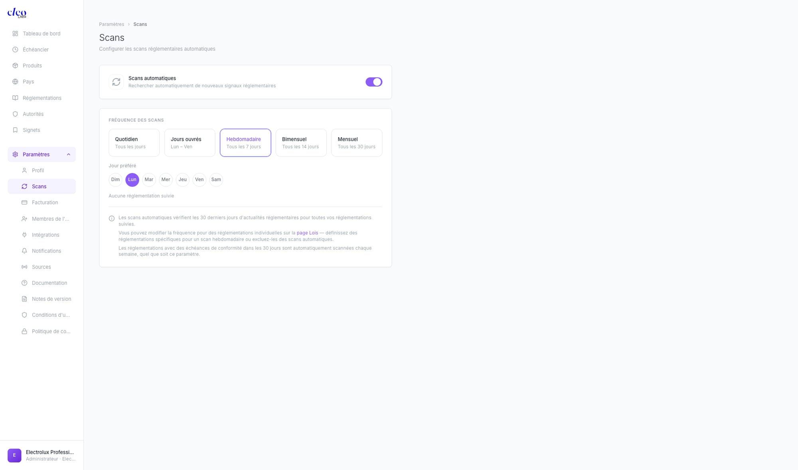
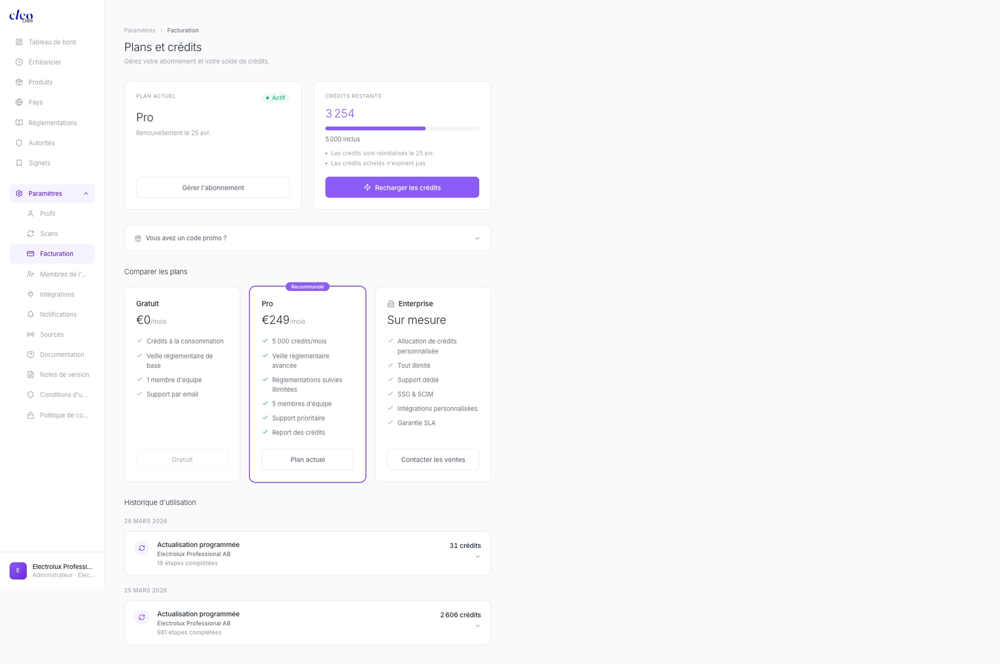
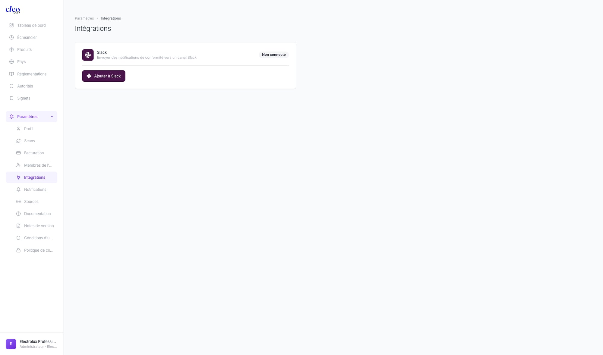
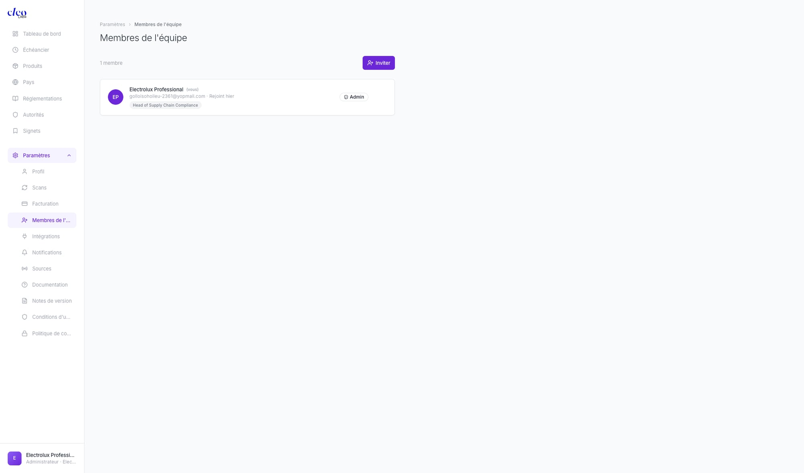
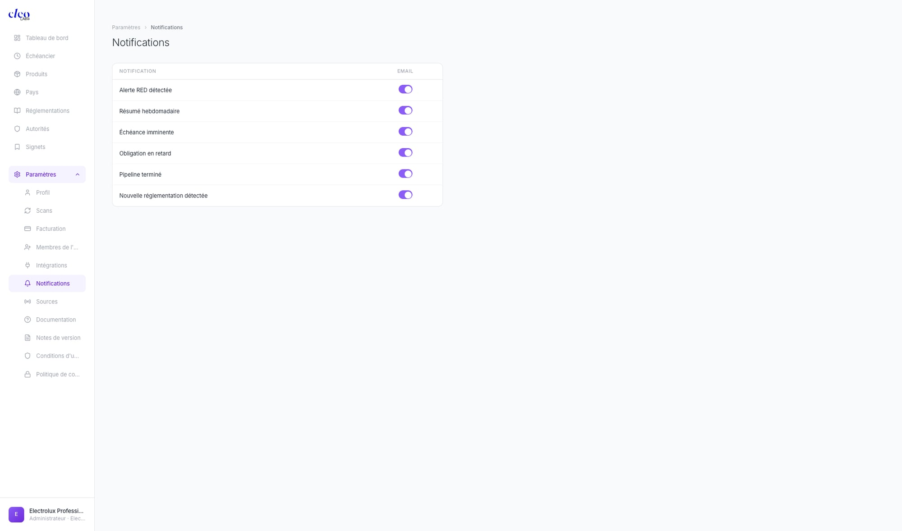

Qu'est-ce que Cleo Comply ?
Cleo Comply est une plateforme d'intelligence réglementaire propulsée par l'IA. Elle surveille des milliers de réglementations dans 106+ pays, les croise avec vos produits et marchés, et vous dit exactement quoi faire — en langage clair, adapté à votre rôle.
Surveillance en temps réel
Scans automatisés de 3 700+ sources officielles — registres fédéraux, publications d'agences, journaux officiels.
Matching produit × réglementation
Chaque signal est croisé avec vos produits et marchés spécifiques issus de votre catalogue.
Intelligence adaptée au rôle
Les résumés et plans d'action s'adaptent à votre rôle — DPO, responsable qualité, juriste.
Sorties actionnables
Obligations légales, plans d'action, échéances et responsables — prêts à être traités.
pays couverts
réglementations en base de connaissance
sources surveillées
autorités réglementaires indexées
textes analysés
🚀 Démarrage rapide
Opérationnel en moins de 5 minutes.
1. Créez votre compte
Inscrivez-vous sur insight.cleolabs.co. On vous demandera votre organisation, votre département et votre rôle. Ces paramètres personnalisent votre expérience.
2. Ajoutez vos produits
Allez dans Produits et ajoutez votre catalogue. Vous pouvez ajouter des produits manuellement ou importer un CSV. Organisez-les par catégories (ex : Papeterie, Électronique, Textile).
3. Ajoutez vos marchés
Allez dans Pays et ajoutez chaque marché où vous vendez. Cleo commence à surveiller les réglementations locales immédiatement.
4. Lancez votre premier scan
Cliquez sur le bouton Actualiser du tableau de bord. Cleo scannera toutes les sources officielles, analysera les résultats et les croisera avec vos produits et marchés. Chaque actualisation consomme des crédits.
5. Consultez votre tableau de bord
Votre tableau de bord affiche maintenant votre paysage réglementaire : nouveaux signaux, niveau d'exposition, prochaines échéances et produits impactés. Commencez par le filtre Critique.
💡 Concepts clés
| Concept | Définition |
|---|---|
| Signal | Un événement réglementaire qui impacte votre organisation — nouvelle loi, sanction, mise à jour de politique, changement d'échéance. |
| Exposition | Votre niveau de risque global basé sur tous les signaux actifs de vos produits et marchés. De Faible à Critique. |
| Impact | La gravité d'un signal pour vos produits spécifiques. Critique → Élevé → Modéré → Faible. |
| Score | Un pourcentage de pertinence sur chaque signal — à quel point il affecte directement votre organisation, selon votre profil. |
| Scan | Un balayage IA des sources officielles qui détecte de nouveaux événements réglementaires et met à jour les existants. Consomme des crédits. |
| Source | Une publication officielle (registre gouvernemental, site d'agence) que Cleo surveille pour détecter des changements réglementaires. |
| Obligation | Une exigence légale spécifique extraite d'une réglementation, avec références d'articles et statut de conformité. |
| Échéance | Une date d'entrée en vigueur à venir pour une réglementation — affichée dans l'Échéancier avec un compte à rebours. |
| Type de signal | Législation = nouvelle loi/réglementation · Sanction = action coercitive ou amende · Analyse = analyse de l'impact d'une réglementation existante. |
| Badge IA | Indique que le produit, le pays ou l'autorité a été automatiquement enrichi par l'analyse IA de Cleo. |
📊 Tableau de bord
Le tableau de bord est votre cockpit quotidien. Il affiche votre paysage réglementaire en un coup d'œil et met en avant ce qui nécessite votre attention.

Cartes KPI
Quatre métriques clés en haut de l'écran :
- Nouveaux — nombre de nouveaux signaux réglementaires depuis votre dernière visite
- Exposition — votre niveau de risque global (Faible / Modéré / Élevé / Critique)
- Échéance — jours avant votre prochaine échéance réglementaire, avec le nom de la réglementation
- Réglementations — nombre total de réglementations surveillées (ex : 996)
Filtres
Deux rangées de filtres rapides pour segmenter votre fil de signaux, plus des filtres déroulants :
- Impact — Tous / Critique / Élevé / Modéré / Faible
- Statut — Tous / En vigueur / Adopté / Proposé
- Menus déroulants — Produit, Pays, Loi, Catégorie (Analyse / Sanction / Législation)
Fil de signaux
Sous les filtres, les signaux sont groupés chronologiquement : HIER, CETTE SEMAINE, PLUS ANCIEN. Chaque carte signal affiche :
- Un badge de type coloré — Législation / Sanction / Analyse
- Le nom de la loi et le drapeau du pays
- L'âge du signal et un titre en une ligne
- Le nombre de produits impactés et le niveau de risque
- Une icône signet (🔖) pour sauvegarder le signal dans les Signets
- Un bouton de partage "Envoyer un signal"
Actualiser
Le bouton Actualiser déclenche un nouveau scan. Cleo parcourt toutes les sources officielles, traite les nouveaux documents et met à jour vos signaux. Chaque actualisation consomme des crédits.
📋 Fiche signal
Cliquez sur n'importe quel signal pour ouvrir sa fiche complète. C'est là que se concentre toute l'intelligence — l'analyse qui prendrait normalement des heures est faite pour vous.

En-tête
Le badge de type du signal, la référence légale, le drapeau du pays, le titre complet, le score de pertinence (ex : 90 %) et le niveau de risque (Critique / Élevé / Modéré / Faible). En deux secondes, vous savez si c'est urgent.
Résumé IA
Un résumé généré par IA et personnalisé selon votre rôle. Il commence par l'impact business clé. Un bouton "Lire la suite" développe le résumé complet. Un DPO voit l'angle protection des données ; un responsable qualité voit l'angle sécurité ; un juriste voit l'angle responsabilité — même événement, perspective différente selon les paramètres de votre Profil.
Conséquences clés
Une liste à puces des conséquences clés avec des indicateurs de gravité par emoji. Immédiates, concrètes et spécifiques à votre contexte business.
Produits impactés
Des tags produits montrant quels articles de votre catalogue sont affectés. Pas des catégories génériques — vos produits réels, croisés automatiquement.
5 sections accordéon
La fiche signal contient cinq sections dépliables qui vont de l'action au contexte :
- VOTRE PLAN D'ACTION — Actions concrètes avec échéances et responsables. Prêtes à être assignées à votre équipe.
- OBLIGATIONS (nombre) — Obligations légales extraites de la réglementation, avec références d'articles et cases à cocher pour le suivi de conformité.
- IMPACT POUR VOTRE RÔLE — Analyse d'impact spécifique à votre rôle, qui s'adapte au Département et Rôle définis dans votre Profil.
- CONTEXTE RÉGLEMENTAIRE — Contexte réglementaire plus large : historique, réglementations connexes, tendances d'application.
- EXPOSITION CONCURRENTIELLE — Analyse de l'exposition concurrentielle couvrant le risque symétrique (identique pour tous) vs. asymétrique (peut avantager certains concurrents).
Source et feedback
Un lien direct vers le document source original (ex : sec.gov), plus une invite de feedback : "Cette source était-elle pertinente ?" avec les boutons Oui / Non. Votre feedback améliore la pertinence des futurs signaux.
📦 Produits
La page Produits — intitulée Par produit — est votre vue portefeuille. Ajoutez votre catalogue et voyez, en un coup d'œil, quels produits concentrent le plus de risque réglementaire.

Ajouter des produits
- Manuel — cliquez "+ Ajouter un produit", saisissez le nom, la catégorie et les marchés
- Import CSV — importez en masse tout votre catalogue
- Découverts par IA — Cleo détecte automatiquement les produits mentionnés dans les signaux et les suggère (affichés avec un badge IA)
Filtres et tri
- Trier par — Impacts / Échéance / Nom
- Source — Tous / Découverts par IA / Personnalisé
- Impacts — Tous / Avec impacts / Sans impacts
- Menus déroulants Catégorie et Pays
Entrées produits
Les produits sont organisés en catégories dépliables. Chaque produit affiche :
- Nom du produit et badge IA (si découvert automatiquement)
- Drapeaux pays pour chaque marché surveillé
- Nombre de réglementations et nombre d'impacts
- Un badge impact rouge pour les impacts critiques
- Actions : bouton Analyser (pour les produits non analysés), modifier, supprimer
📅 Échéancier
Votre calendrier réglementaire. Une timeline verticale montrant toutes les dates d'entrée en vigueur, échéances et jalons réglementaires à venir.

Lire l'échéancier
- Un marqueur "AUJOURD'HUI" avec la date actuelle indique votre position
- Les événements sont groupés par mois
- Chaque événement affiche un badge date coloré, un compte à rebours "Xj restants", le titre de l'événement et le nom de la réglementation associée
Filtres
- Horizon — 30 jours / 90 jours / 6 mois / Tous
- Risque — Tous / Critique / Élevé / Modéré / Faible
- Menus déroulants — filtrer par réglementation, produit, pays
- Barre de recherche — trouver une échéance spécifique par mot-clé
🌍 Pays
Dites à Cleo où vous vendez — intitulé Par pays — et il surveille automatiquement les réglementations locales.

Carte du monde
Une carte d'exposition colorée : rouge = critique, orange = élevé, gris = non surveillé. Sous la carte : légende affichant X SURVEILLÉES · X CRITIQUES avec des points de couleur.
Ajouter des marchés
- Cliquez "+ Ajouter un pays" — sélectionnez dans la liste, la surveillance commence immédiatement
- Import CSV pour les ajouts en masse
Filtres
- Région — Toutes / Europe / Amériques / APAC / Afrique-ME
- Impacts — Tous / Avec impacts / Sans impacts
- Menu déroulant Produit
Entrées pays
Chaque entrée affiche : drapeau, nom du pays, badge IA, nombre de sous-pays pour les unions (ex : UE → 5 pays), région, nombre d'impacts, badge critique et une barre d'impact. Certaines entrées se déploient en sous-régions :
- Union européenne se déploie par État membre — chacun avec ses spécificités de transposition
- États-Unis se déploie par État — crucial car les réglementations d'État (comme la Proposition 65 de Californie) peuvent être plus strictes que le niveau fédéral
⚖️ Réglementations
996 réglementations déjà en base de données — intitulé Par réglementation — enrichies automatiquement par l'IA.

Filtres
- Risque — Tous / Critique / Élevé / Modéré / Faible
- Statut — Tous / En vigueur / Adopté / Proposé
- Menus déroulants — domaine, région, statut de conformité, produit
- Boutons Import CSV et + Ajouter une réglementation
Groupement par domaine
Les réglementations sont groupées par domaine, chaque groupe étant dépliable avec un nombre total de réglementations et un nombre d'impacts :
- Commerce & Sanctions
- Droit du travail
- Protection des données
- Environnement & Durabilité
- Santé & Sécurité
- Et plus...
Ajouter une réglementation
Cliquez "+ Ajouter une réglementation" pour ajouter toute réglementation absente de la bibliothèque. Cleo l'enrichira automatiquement avec l'autorité, la juridiction, le statut et les obligations associées.
🔖 Signets
Sauvegardez n'importe quel signal pour révision ultérieure. Les Signets sont votre liste de lecture personnelle dans Cleo Comply.

Sauvegarder un signal
Depuis le tableau de bord ou n'importe quelle fiche signal, cliquez sur l'icône signet (🔖). Il est instantanément sauvegardé dans votre page Signets. L'icône devient pleine pour confirmer la sauvegarde.
État vide
Lorsqu'aucun signal n'est encore sauvegardé, la page affiche : une icône signet, "Aucun signet", et l'instruction "Appuyez sur l'icône signet sur n'importe quel signal pour le retrouver ici."
👤 Profil
Votre profil est le paramètre n°1 à configurer correctement. Il détermine comment chaque résumé de signal et analyse d'impact est rédigé pour vous.

Champs du profil
- Nom complet — votre nom complet
- Email — votre email de connexion
- Département — menu déroulant (Juridique, Conformité, Qualité, Produit, etc.)
- Rôle — menu déroulant (DPO, Responsable Qualité, Juriste, etc.)
- Entreprise — nom de votre organisation
- Slack Member ID — optionnel, pour les notifications Slack directes
- Langue — menu déroulant avec drapeaux (FR 🇫🇷 / EN 🇬🇧)
Bascules d'affichage
- Masquer les lois sans impact — masque les réglementations sans impact sur vos produits
- Masquer les autorités sans impact — masque les autorités sans impact sur vos produits
Actions
Boutons Annuler / Enregistrer pour sauvegarder ou annuler les modifications. Un bouton Se déconnecter pour quitter la session.
⚡ Scans
Configurez les scans réglementaires automatiques. Intitulé : Scans — Configurer les scans réglementaires automatiques.

Scans automatiques
Une bascule principale — Scans automatiques ON/OFF — contrôle si les scans s'exécutent selon un planning. Lorsqu'activée, configurez :
- Fréquence — Quotidien / Jours ouvrés / Hebdomadaire / Bimensuel / Mensuel
- Jour préféré — Dim / Lun / Mar / Mer / Jeu / Ven / Sam
Surveillance par réglementation
Vous pouvez configurer la fréquence de scan par réglementation individuelle depuis la page Réglementations, remplaçant le paramètre global pour les lois prioritaires.
Scan manuel
À tout moment, cliquez sur le bouton Actualiser du Tableau de bord pour déclencher un scan à la demande. Chaque scan (automatique ou manuel) consomme des crédits.
💳 Facturation
Gérez votre abonnement et l'utilisation de vos crédits.

Abonnement actuel & crédits
Deux cartes en haut : votre abonnement actuel et vos crédits restants (ex : 3 254 / 5 000). Un bouton "Recharger les crédits" permet d'acheter des crédits supplémentaires. Un champ code promo dépliable est également disponible.
Offres
| Offre | Prix | Inclus |
|---|---|---|
| Gratuit | €0/mois | Crédits à la consommation · Veille réglementaire de base · 1 membre d'équipe · Support par email |
| Pro ⭐ Recommandé | €249/mois | 5 000 crédits/mois · Veille réglementaire avancée · Réglementations suivies illimitées · 5 membres d'équipe · Support prioritaire · Report des crédits |
| Enterprise | Sur mesure | Allocation de crédits personnalisée · Tout illimité · Support dédié · SSO & SCIM · Intégrations personnalisées · Garantie SLA |
Historique d'utilisation
Un tableau affichant l'historique de consommation de crédits avec : date, nom du scan, organisation, étapes complétées et crédits consommés.
🔗 Intégrations
Connectez Cleo Comply aux outils déjà utilisés par votre équipe.

Slack
Envoyez des notifications de conformité directement dans un canal Slack.
- Statut : Non connecté par défaut
- Cliquez "Ajouter à Slack" pour autoriser et sélectionner votre canal
- Une fois connecté, configurez quels types de notifications vont sur Slack dans les paramètres Notifications
- Ajoutez votre Slack Member ID dans les paramètres Profil pour recevoir des messages directs en cas d'alertes critiques
#alertes-reglementaires pour votre équipe conformité. Routez les alertes Critique et Échéance là-bas pour ne rien manquer.👥 Équipe
Invitez des membres de l'équipe à collaborer sur l'intelligence réglementaire — intitulé Membres de l'équipe.

Inviter des membres
Cliquez sur le bouton Inviter et saisissez l'adresse email. L'invité reçoit un email pour créer son compte. Le nombre total de membres est affiché à côté du titre de la section.
Cartes membres
Chaque membre est affiché sous forme de carte avec : avatar, nom, tag (vous) pour l'utilisateur actuel, email, date d'arrivée, libellé de rôle, et un badge Admin pour les administrateurs.
Offres et limites de sièges
| Offre | Membres |
|---|---|
| Gratuit | 1 |
| Pro | Jusqu'à 5 |
| Enterprise | Illimité |
Chaque membre dispose de ses propres paramètres de profil (département et rôle), ce qui signifie qu'il reçoit des résumés personnalisés adaptés à sa fonction.
🔔 Notifications
Configurez quels événements déclenchent des alertes email.

Types de notifications
Un tableau avec chaque type de notification et une bascule Email (actif/inactif) :
| # | Type de notification | Description |
|---|---|---|
| 1 | Alerte RED détectée | Alerte immédiate lorsqu'un signal de niveau Critique est détecté |
| 2 | Résumé hebdomadaire | Digest hebdomadaire de l'activité réglementaire sur votre portefeuille |
| 3 | Échéance imminente | Avis préalable avant une prochaine échéance d'application |
| 4 | Obligation en retard | Alerte lorsqu'une obligation de conformité est en retard |
| 5 | Pipeline terminé | Confirmation quand un pipeline de scan se termine |
| 6 | Nouvelle réglementation détectée | Alerte quand une nouvelle réglementation est ajoutée à votre périmètre de surveillance |
🔍 Sources
Contrôlez d'où Cleo tire son intelligence — intitulé Sources — Sources contribuant à votre veille réglementaire.

Statistiques générales
En haut : X sources avec impact business · X bloquées. Une barre de recherche et un bouton "+ Ajouter une source".
Tableau des sources
Chaque source affiche :
- Domaine — ex : federalregister.gov, eur-lex.europa.eu
- Score de qualité — badge coloré (indice de fiabilité)
- Nombre d'articles / Nombre d'impacts — combien d'articles ont contribué et combien ont généré des signaux
- Statut — Autorisée (vert) / Bloquée (rouge) / Préférée (bleu)
Gérer les sources
- Bloquer une source — cliquez pour passer le statut à "Bloquée". Cleo arrête de l'utiliser dans les analyses futures.
- Préférer une source — marquez comme "Préférée". Elles sont prioritaires et pondérées plus fortement dans chaque scan.
- Ajouter une source personnalisée — cliquez "+ Ajouter une source" et saisissez le domaine.
❓ FAQ
Comment fonctionnent les scans automatiques ?
Selon la fréquence configurée dans les paramètres Scans, Cleo vérifie automatiquement les 30 derniers jours d'actualités réglementaires. Vous pouvez modifier la fréquence par réglementation individuelle sur la page Réglementations. Les réglementations avec des échéances dans les 30 jours sont scannées chaque semaine quel que soit votre paramètre global.
Qu'est-ce que les crédits ?
Chaque scan (manuel ou automatique) consomme des crédits. L'offre Pro inclut 5 000 crédits/mois. Les crédits sont reportés — les crédits non utilisés passent au mois suivant. Vous pouvez acheter des crédits supplémentaires à tout moment depuis la page Facturation.
Quelle est la différence entre les types de signaux ?
- Législation — une nouvelle loi ou réglementation a été publiée ou mise à jour
- Sanction — une action coercitive, amende ou pénalité a été émise par une autorité
- Analyse — une analyse de l'impact d'une réglementation existante sur votre secteur ou vos produits
Comment fonctionne la personnalisation par rôle ?
Elle est basée sur le Département et le Rôle définis dans votre Profil. Quand un événement réglementaire est traité, Cleo génère un résumé adapté à votre fonction. Un DPO voit l'angle protection des données ; un Responsable Qualité voit l'angle sécurité ; un Juriste voit l'angle responsabilité — même événement, perspective différente.
Puis-je partager des signaux avec mon équipe ?
Oui. Utilisez le bouton "Envoyer un signal" sur n'importe quelle fiche signal dans le tableau de bord. Il génère un lien partageable ou envoie directement le signal à un collègue.
Que signifie le badge IA ?
Le badge IA sur un produit, un pays ou une autorité signifie qu'il a été automatiquement découvert et enrichi par l'analyse IA de Cleo — vous ne l'avez pas ajouté manuellement. Vous pouvez toujours modifier ou supprimer les entrées enrichies par l'IA.
Puis-je ajouter des réglementations absentes de la bibliothèque ?
Oui. Cliquez "+ Ajouter une réglementation" sur la page Réglementations. Cleo l'enrichira automatiquement avec l'autorité, la juridiction, le statut et les obligations associées.
Que se passe-t-il quand j'ajoute un nouveau pays ?
Cleo commence immédiatement à surveiller les réglementations locales pour ce marché et les croise avec votre catalogue produits. Les nouveaux signaux apparaîtront lors de votre prochain scan.
📝 Changelog
Dernières mises à jour de Cleo Comply.
Mars 2026
Nouvelles fonctionnalités
- Signets — sauvegardez n'importe quel signal depuis le tableau de bord avec l'icône signet ; accédez à tous les signaux sauvegardés dans la nouvelle section Signets
- Page Intégrations — page dédiée pour connecter des outils tiers (Slack disponible maintenant)
- Exposition concurrentielle — nouvelle section accordéon sur les fiches signal analysant le risque symétrique vs. asymétrique
- Page Autorités — 550+ groupes d'autorités réglementaires avec bascule Regroupé, badges de risque et barres d'impact
- Sources prioritaires — définissez des sources préférées avec ordre de priorité pour vos scans
- Détail du score — explication complète de la gravité et probabilité derrière chaque score de conformité
- Obligations clés & produits dans l'enrichissement — les profils de réglementation incluent maintenant les obligations clés et produits applicables
- File d'attente des scans — lancez plusieurs scans simultanément avec mise en file automatique et reprise sur erreur
- Page Sources pour le plan Gratuit — les utilisateurs du plan Gratuit peuvent maintenant voir et configurer leurs sources d'intelligence réglementaire
Améliorations
- La plateforme couvre maintenant 106 pays avec 25 000+ réglementations en base de connaissance
- Le plan Pro supporte maintenant jusqu'à 5 membres d'équipe
- Les paramètres Scans sont maintenant basés sur la fréquence (Quotidien / Jours ouvrés / Hebdomadaire / Bimensuel / Mensuel)
- Profil : ajout des bascules Masquer les lois/autorités sans impact et du champ Slack Member ID
- L'infobulle du score affiche maintenant le texte d'explication complet
- L'indicateur de progression du scan reflète la progression réelle des opérations
Corrections de bugs
- Correction de la boucle de redirection d'authentification
- Correction des scans bloqués/dupliqués
- Correction des erreurs de traduction sur les longs articles réglementaires
- Délai de traduction étendu à 180s avec reprise automatique
- Correction de l'échec de pipeline sur timeout worker
- Correction du polling des métadonnées de régénération de page
- Ajustement de la concurrence Bedrock pour respecter les quotas TPM